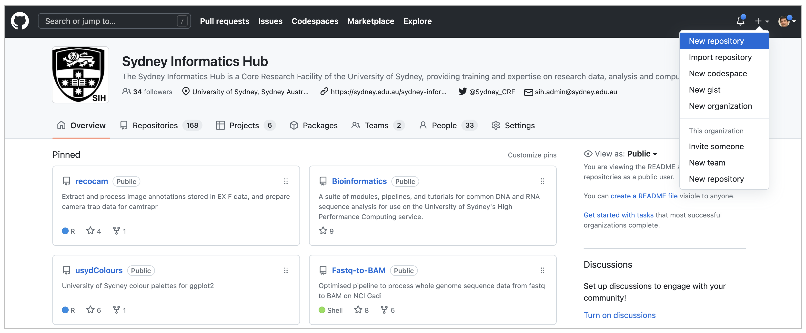

Create a new repository on GitHub
Questions
- Are you ready? Are all the pre-requisites satisfied?
- For todays code-along session, you will need a test repository (or repo) on GitHub.

* Click on the + symbol on the right hand top corner.
* Select New repository

Please select the following options in the above form.
* Repository template: No template.
* Repository name: myrepo or any other name of your choice.
* Description: “Repository for testing my Git/GitHub setup” or similar.
* Choose Public.
* Initialize this repository with: Add a README file.
Now click the big green button that says 
Copy the clone URL to your clipboard. Since we have created a PAT for HTTPS protocol , copy the HTTPS URL as shown below.
and type the following code on your terminal:
git clone https://github.com/YOUR-USERNAME/YOUR-REPOSITORY.git
~/master_class % git clone https://github.com/Sydney-Informatics-Hub/myrepo_masterclass_RStudio_github.git
Cloning into 'myrepo_masterclass_RStudio_github'...
Username for 'https://github.com': nandan75
Password for 'https://nandan75@github.com':
remote: Enumerating objects: 3, done.
remote: Counting objects: 100% (3/3), done.
remote: Compressing objects: 100% (2/2), done.
remote: Total 3 (delta 0), reused 0 (delta 0), pack-reused 0
Receiving objects: 100% (3/3), done.I have named my repo as `myrepo_masterclass_RStudio_github’ Please do a few checks with the local copy of the repos
Make this new repo your working directory, list its files, display the README, and get some information on its connection to GitHub:
- Make this new repo your working directory
cd myrepo_masterclass_RStudio_github - list all files
ls - Display the README
head README.md - Get some information on its connection to GitHub
git remote show origin
Make a local change, then commit, and push
Add a line to README and verify that git notices the change. Open the README file with a text editor and add some words like “I am adding a line in my local copy”. Then go back to your terminal and type the command below:
git statusOn branch main
Your branch is up to date with 'origin/main'.
Changes not staged for commit:
(use "git add <file>..." to update what will be committed)
(use "git restore <file>..." to discard changes in working directory)
modified: README.md
no changes added to commit (use "git add" and/or "git commit -a")Add the file with changes - README.md for commit step:
git add README.md
git commit -m "A commit from my local computer"`
[main 306de6f] A commit from my local computer
1 file changed, 1 insertion(+)Note you always have to include a message with your commit.
Push the changes to github git push.
The local changes should now be reflected into the README.md file on the github repo. Please check them.
All materials copyright Sydney Informatics Hub, University of Sydney